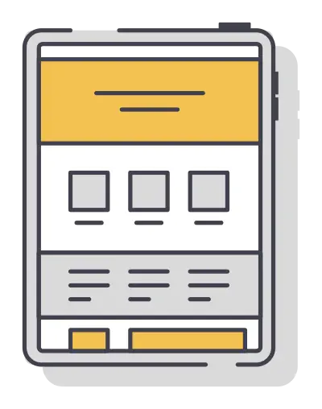
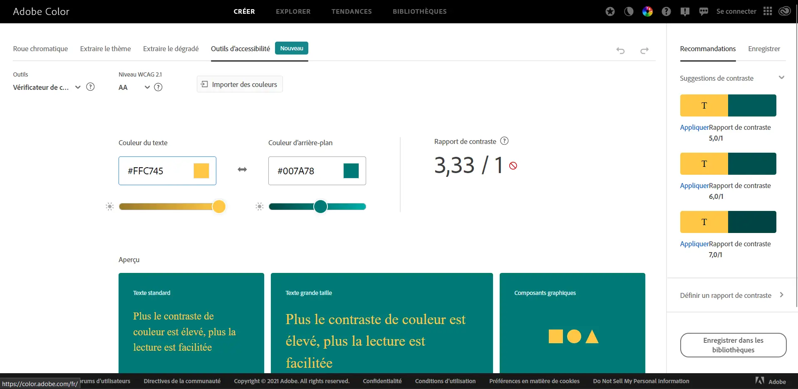
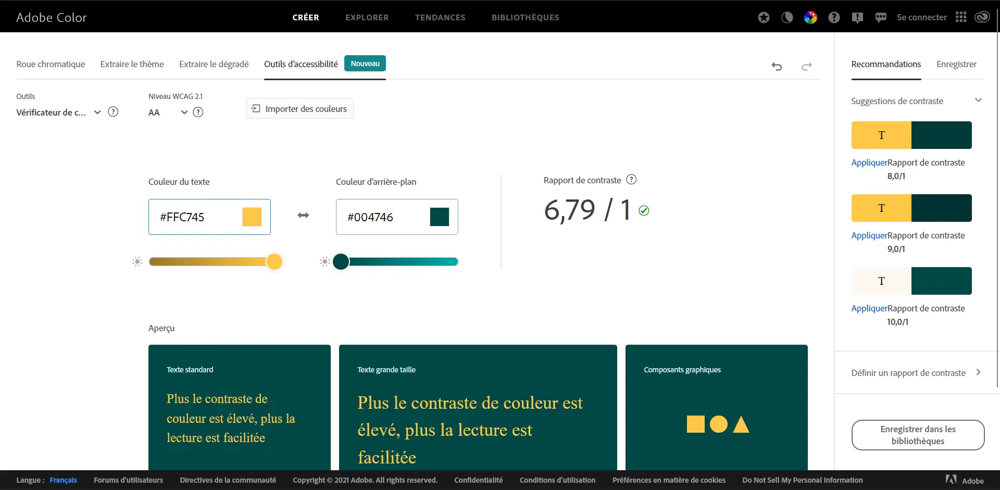
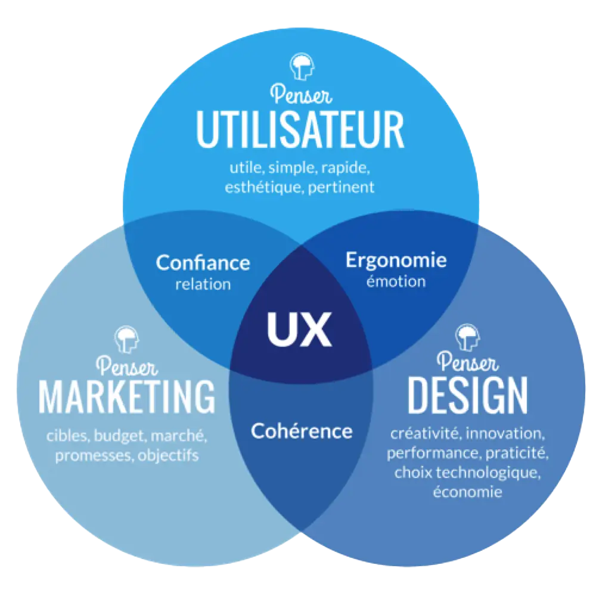

UX / UI
En quoi l'UX / UI est devenu un enjeu crucial pour le monde actuel qui est en pleine expansion technologique ?
Définition :
-
Interface Utilisateur
- 
- L’interface utilisateur est un dispositif matériel ou logiciel qui permet à un usager d'interagir avec un produit informatique. C'est une interface informatique qui coordonne les interactions homme-machine, en permettant à l'usager humain de contrôler le produit et d'échanger des informations avec le produit.
-
Expérience Utilisateur
- L'expérience utilisateur est la qualité du vécu de l'utilisateur dans des environnements numériques ou physiques. C'est une notion de plus en plus courante là où l'on utilisait, encore récemment, les notions d'ergonomie des logiciels et d'utilisabilité.
L'accessibilité
"En France, quand on est déficient visuel, il est presque impossible de refaire sa carte d’identité ou son permis de conduire en ligne. La raison ? 77 % des 250 services publics en ligne ne sont pas accessibles aux 12 millions de Français en situation de handicap, c’est-à-dire qu’ils ne sont pas conçus pour être retranscrits à l’oral ou en braille par un lecteur d’écran pour ceux qui en ont besoin."
L’accessibilité est un terme initialement relatif au monde du handicap, des enfants ou des personnes âgées, puis étendu à l'ensemble des citoyens et utilisé pour désigner l'accès aux domaines suivants. Pour les personnes en situation de handicap, l'objectif de l'accessibilité est de permettre une vie ordinaire. Ce terme est aussi utilisé dans la Convention relative aux droits des personnes handicapées (CDPH) développée sur la base de la Déclaration universelle des droits de l'homme, qui a pour but de garantir le respect des droits de ces personnes. Par ailleurs, le terme ne doit pas être confondu avec l’ergonomie et l’utilisabilité. Pour les personnes n'étant pas en situation de handicap, l'accessibilité reste une préoccupation dans diverses situations : femmes enceintes, incapacités temporaires consécutives à un accident du travail ou domestique, difficultés sensorielles liées à l'âge, sur-poids : des situations où l'individu est concerné sans être à proprement parler en situation de handicap. par exemple : "l’Union européenne (UE) a également enfoncé le clou. Les États membres avaient jusqu’au 23 septembre 2020 pour se mettre en conformité. ", de ce fait nous devons être en conformité avec les normes de l’UE et rendre accessible.

Constraste
Le contraste est alors important aussi, par exemple les personnes handicapés qui ont des problèmes de la vision de la couleur, permet alors pour les mal-voyants de permettres une vision plus claire. Et cela grâce aux constrastes Un bon contraste des couleurs sur votre site profite à tous vos utilisateurs, mais celà est particulièrement intéressant pour les utilisateurs souffrant de certains types de daltonisme et d'autres particularités similaires, qui rencontrent un faible contraste et ont du mal à faire la différence entre des couleurs proches. En effet, ces utilisateurs ne voient pas les zones claires et sombres aussi facilement que ceux sans ces particularités et ont donc du mal à voir les bords, les bordures et d'autres détails. C'est bien d'avoir un design cool sur votre site, mais le design ne vaut rien si vos utilisateurs ne peuvent pas lire votre contenu.
- 
- 
La sémantique
La sémantique est une branche de la linguistique qui étudie les signifiés, ce dont on parle, ce que l'on veut transmettre par un énoncé, soit l'ensemble des processus concourant à la construction d'un sens dans la communication (langagière particulièrement). Le support de la sémantique, la syntaxe, concerne pour sa part le signifiant, sa morphologie, sa langue, sa graphie, sa grammaire, etc. ; c'est la forme de l'énoncé.
Entre expérience utilisateur et choix de conception
En mars 2022, Ferpection a procédé à des tests utilisateurs à distance afin d’analyser les expériences utilisateurs et ainsi proposer des recommandations adaptées aux éditeurs de jeu vidéo.
L’objectif de cette étude est :
- D’évaluer l’expérience utilisateur et identifier les points bloquants.
- D’évaluer les perceptions des utilisateurs dans leur mode de jeu et de leur univers.
Alors, ce qu'on retiens que cette études montre alors que les utilisateurs sont très satisfaits par rapport aux nouveaux design de leur launcher ou même de la façon d'installer leur jeux, mais le seule problème est l'expérience de jeu pour le
tutoriel de League of legends. En effet, ce tutoriel n'a pas beaucoup changé depuis longtemps. Et c'est pour cela qu'ils vont peut être le changer.
Conclusion
Pour conclure, l'accessibilité est un enjeu important pour la suite de l'aventure de l'UX / UI. En effet, dans un monde qui bouge sans cesse , il est important de pouvoir faire face à toutes les situations possibles, par conséquent, le 100% accès numériques pour l'utilisation. Là ou le service public devient de plus en plus numérique, par rapport aux démarches administratives.
Source / Article
- https://www.01net.com/actualites/comment-les-malvoyants-sont-discrimines-dans-l-acces-aux-services-publics-en-ligne-1987770.html
- J'ai un pote dans la com : https://jai-un-pote-dans-la.com/ux-et-jeux-video-quels-points-damelioration-pour-seduire-plus-de-joueurs/
- UZIK : https://lareclame.fr/uzik/realisations/refonte-ux-ui-site-web
- Blog du modérateur : https://www.blogdumoderateur.com/ux-ui-designer-competences-multiples-concevoir-interfaces-numeriques/
- La chaîne de BastUI : https://www.youtube.com/c/BastiUI